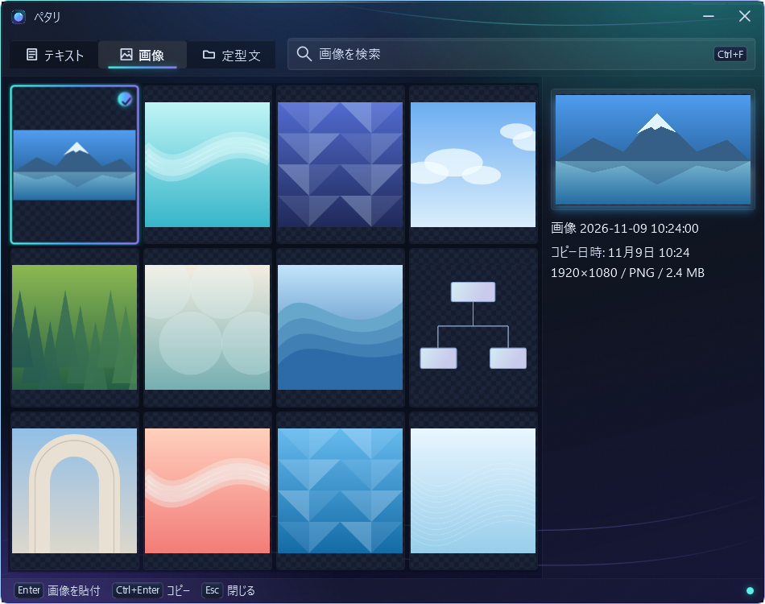
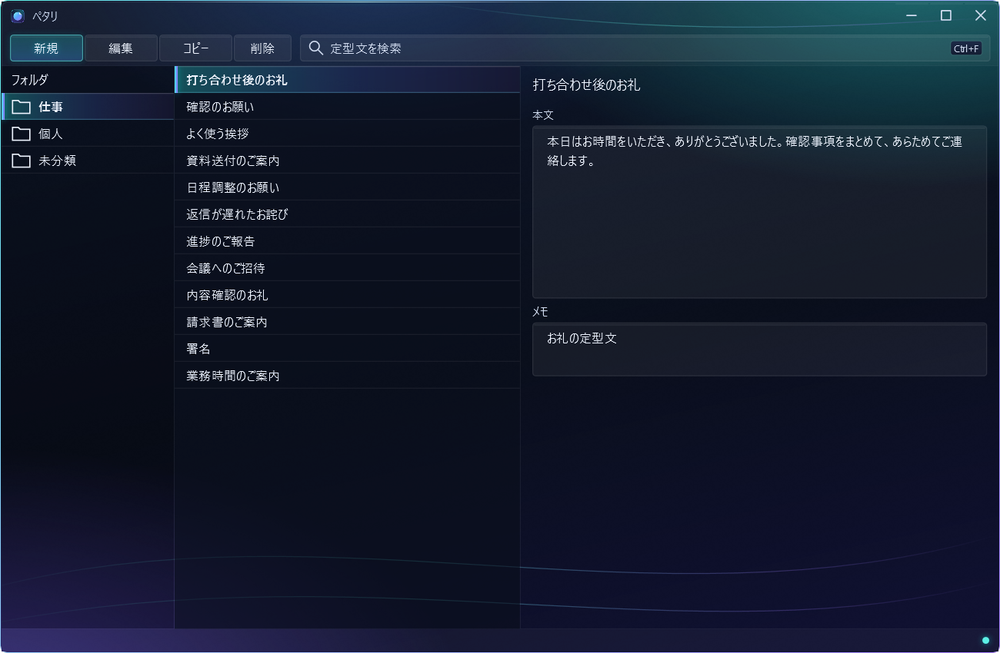
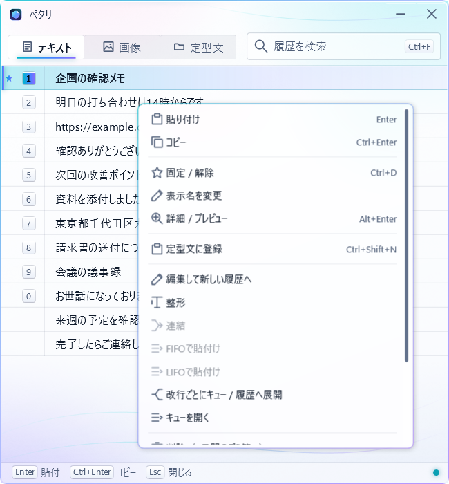

FEATURESさっきコピーしたもの、ぜんぶ取り出せます。
新しくコピーすると、前の内容は消えてしまう。ペタリは、その「前の内容」を取っておいて、いつでも貼り直せるようにします。
テキストの履歴
コピーした文章を順に保存。1 行ずつ詰めて並ぶので、たくさんの履歴をひと目で探せます。
画像の履歴
画像をコピーしたあとに別の文章をコピーしても大丈夫。画像は画像のまま、あとから貼れます。
定型文とフォルダ
あいさつ文や署名など、よく使う文章をフォルダに分けて登録。メモも添えられます。
画像をコピーしたあとでも、取り戻せる。
スクリーンショットや画像をコピーしてから、うっかり別のものをコピーしてしまった。そんなときも、画像の履歴から選んで Enter を押すだけです。
- サムネイルで見て選べます
- 元の画像そのものを保存するので、画質は変わりません
- PC を再起動したあとも残ります

よく使う文章は、フォルダで整理。
仕事用・個人用のようにフォルダを分けて、定型文を登録できます。履歴から右クリックで「定型文に登録」するだけ。
- 検索はひらがな・カタカナ、全角・半角の違いを気にせず探せます
- CSV での書き出しと取り込みに対応

まとめて貼る、整えて貼る。
複数の履歴を選んで、順番に貼り付けたり、ひとつにつないだり。空白の削除や全角英数字の半角化など、貼る前のひと手間も画面の中で済みます。
- 順番に貼る（先に選んだ順・後に選んだ順）
- 複数の履歴を連結
- 4 種類の整形とプレビュー

HOW TO USE手はキーボードに置いたまま。
呼び出して、選んで、貼る。この 3 つをキーボードだけで行えます。マウスでも同じことができます。
PRIVACYコピーした内容は、あなたの PC の中だけに。
外へ送りません
ペタリには通信の機能がありません。履歴も定型文も、インターネットへ送られることはありません。
暗号化して保存
履歴と画像は暗号化して、あなたの PC の中に保存します。アカウントの登録は要りません。
止めたいときは一時停止
トレイのアイコンから、収集の一時停止と再開ができます。手動で消した履歴は 7 日間ゴミ箱に残ります。
ペタリはパスワード管理のためのアプリではありません。パスワードは専用の管理ツールでの保管をおすすめします。
INSTALL入れ方は 3 ステップ。
ダウンロード
下のボタンから ZIP ファイルをダウンロードします。
展開
ZIP を右クリックして「すべて展開」を選びます。
インストール
展開したフォルダの install.ps1 を右クリックして「PowerShell で実行」。スタートメニューに「ペタリ」が入ります。
ペタリは個人が開発した無料のアプリで、有料のコード署名を付けていません。そのため、初回の起動時に Windows の「PC が保護されました」という画面が出ることがあります。「詳細情報」→「実行」で進めます。Smart App Control が有効な PC では起動できません。
FAQよくある質問
お金はかかりますか？
無料です。個人でも仕事でも使えます。
どの Windows で動きますか？
Windows 11 の 64bit 版で動作を確認しています。.NET などの追加のインストールは要りません。
ほかのクリップボードアプリと一緒に使えますか？
使えます。ただし、ほかのアプリも「Ctrl を 2 回」で開く設定の場合は、両方が同時に反応します。ペタリの設定で Ctrl 2 回をオフにして、Ctrl+Alt+V で呼び出してください。
履歴はどのくらい残りますか？
初期設定では、テキストは 2,000 件、画像は 100 件までです。上限を超えると、固定していない古いものから削除します。件数と保存期間は設定で変えられます。
アンインストールするには？
インストール先のフォルダにある uninstall.ps1 を実行します。履歴のデータを残すか消すかを選べます。
Mac やスマートフォンで使えますか？
いまは Windows 専用です。
コピーの続きを、ペタリと手元に。
無料・登録なし・Windows 11（64bit）
無料でダウンロード（ZIP・約 72 MB）バージョン 0.1.0 ／ ダウンロードは GitHub の配布ページから行います